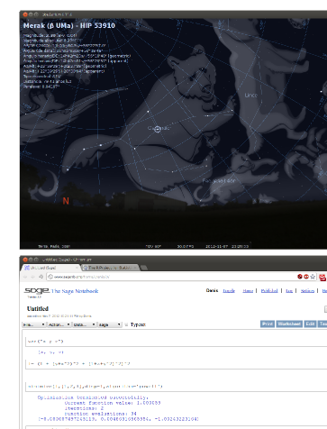

<div class="main wide green-background">
    <div class="text small-text background-gray">
        <h1 class="innertitle">Ciencia, investigación, educación e tecnoloxía</h1>
        <div>
            <p>O software libre ten unha longa tradición de implantación nas institucións de investigación e as ferramentas científico-técnicas son moi abondosas: <strong>Octave</strong> e <strong>SAGE</strong> para o análise numérico e alxebraico, R para o tratamento estatístico de datos, Eclipse para o desenvolvimento de software... </p>

            <p>Para a educación hai aplicativos que axudarán ao alumnado a aprender os novos conceptos, dende astronomía ata idiomas ou álxebra. No ensino non universitario, adaptacións de <strong>GNU/Linux</strong> coma Edubuntu veñen xa preinstalados con moitos deles.</p>
        </div>
    </div>

    
</div>
    
